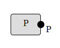
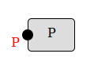
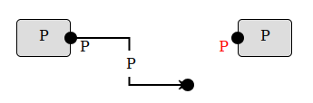
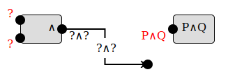
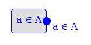

(Choosing a new level clears any existing proof)
Parameters, as name : type, one per line:
Variables, as name : type, one per line:
Hypotheses, types only (i.e. propositions), one per line:
Conclusion:
Variables currently in use:
New variable:
Enter a statement for the label:
Introduce the following expression, possibly using other available variables:
Label this wire with the following set or proposition:
You can use the following key sequences to enter mathematical symbols. Letter sequences starting with a backslash "\" must end with a space.
Olorin is a game where you prove abstract theorems in classical predicate logic by connecting boxes with wires. It's a fun collection of puzzles, and also an educational tool for learning to write proofs. There are over a hundred levels, divided into four "worlds" with several stages each, and three difficulty settings. You can also create and solve custom levels, although this is not well-documented.
If you're just getting started, you should probably close this box now and try it out, starting from level 1-1-1 on Novice difficulty and proceeding in order. The game will prompt you with hints at the beginning of each level when new features are introduced, and you can come back to this overview at any time by clicking "About" on the "Select Level" screen. Currently you're allowed to skip around rather than playing the levels in order, but when first learning I highly recommend you go in order on Novice difficulty; some guidelines about progressing through the worlds and increasing the difficulty level are given below.
In each level you have some number (perhaps zero) of "assumptions" or "givens" that appear in boxes on the left, and one desired "conclusion" appearing in a box on the right. Your goal is to connect the assumptions to the conclusion: logic flows from left to right.
You can add new boxes to the graph by dragging and dropping them from the "palette" bar on the left; more options will be added to the palette as you progress through the levels. Each box represents a "proof rule", and has some number of "input ports" on the left and "output ports" on the right. You can drag a connection from any output port to any input port, and it will be valid as long as they "carry" the same statement or value. Wires carrying "values" rather than "truth" are colored blue. Some boxes also give you "local assumptions" that act like output ports, but can only be used to prove the corresponding "subgoal" input port; these are matched visually with "brackets".
Boxes already in the graph can be dragged around to organize the proof visually. You can drag multiple boxes at once by first "selecting" several of them with shift-click, or by dragging a rectangle around them, and then dragging one of them. Furthermore, boxes with brackets can be resized horizontally by dragging the left or right edges. I highly encourage you to arrange the boxes so that all the wires travel only left-to-right, and make brackets large enough that the "subproofs" fit entirely inside.
For the proof to be correct, every input port must have something coming into it, and all wires must connect ports carrying the same statement or value. (Not every output port needs to be used, but usually most will be.) When your proof is correct, the conclusion and background will turn a color (according to the difficulty level), as will that level in the level-selection dialog, with one to three stars awarded according to the difficulty setting. If you make a mistake, you can remove boxes and wires by clicking on the red "X" that appears when you hover over them.
At Novice difficulty (★☆☆), most unconnected ports are automatically labeled with the statement or value they carry (red for input ports, which are missing something to connect to them). In addition, all wires are automatically labeled with the statement or value they carry, and incorrectly connected wires are colored red. At any given point during the construction of a proof, the labeled output ports can be thought of as "givens" (known or assumed facts), and the red-labeled input ports can be thought of as "goals" (statements to prove). (However, not all givens are available for all goals; hypotheses introduced on the left side of a bracket are only usable to prove the corresponding subgoal on the right side of that bracket.) A proof novice can choose the rule to apply next, guided by the logical structure of the givens and the goals.
At Adept difficulty (★★☆), ports are not labeled, and most wires are not labeled automatically. Instead, you are prompted for a label for each wire. (The exceptions are wires connected directly to a hypothesis or the conclusion, since it is obvious what those should be labeled, and wires that carry values.) Wires with incorrect labels, or that are incorrectly connected, are colored red, and both prevent the proof from being marked correct. In particular, even if your proof would be correct in Novice mode according to the connections only, it is rejected in Adept mode if you labeled the wires incorrectly. A proof adept knows how each applied rule affects the current givens and goals.
At Master difficulty (★★★), you are still required to label all the wires yourself (with the same exceptions), but incorrectly connected or labeled wires are not colored red any more. The only information you get about the correctness of the proof (including your labels on the wires) is whether the conclusion turns purple! A proof master can plan and execute an entire proof alone, and find and fix their own mistakes.
I recommend that you work up in difficulty setting "one world behind" your most advanced levels. For instance, start by completing Proposition World at Novice setting. Then complete Advanced Proposition World at Novice setting. Then go back and re-do Proposition World at Adept setting. Next, work on Quantifier World at Novice setting, Advanced Proposition World at Adept setting, and Proposition World at Master setting, and so on. By inserting a delay before you go back to re-do each level at a higher difficulty, you will reinforce your learning and make the challenge more meaningful. Similarly, when you are working through a given world at a higher difficulty setting, it would be easy to "cheat" by doing each level again at Novice setting and then copying the proof and wire labels from your short-term memory at the higher difficulty, but you won't learn as much that way. If you start working on a higher difficulty setting and get stuck, you can downgrade the difficulty without losing your partial proof using the button in the upper-right corner, but of course then you'll only get credit for completing the level at the lower difficulty.
It's worth noting that whether a given wire is colored red as "incorrect" in Novice and Adept modes can depend not only on that wire and its label, but on the other wires in the diagram. A wire in an incomplete proof may be colored black at first, but become red when another wire is added, since the second wire gives additional information about what must be carried by the first wire. A valid proof can also not contain cycles (loops), and of course a cycle usually involves more than one wire.
Somewhat more surprisingly, the opposite can also happen: a wire can be colored red at first but become black when another wire is added. This generally happens if you connect a "proposition" wire to a quantifier rule (∀ or ∃) without first connecting the corresponding "value" wire, since until Olorin knows what the value is, it can't tell that the proposition wire is correct. This is arguably a bug, since in other contexts "not yet known to be incorrect" wires are colored black rather than red, but the prospects of fixing it in the near future are slim, due to Narya's current lack of a full unification algorithm. Just make a habit of always connecting the value (blue) wires first, or don't worry about the temporarily red wire if you do it the other way.
Many people have represented proofs graphically, starting with Charles Sanders Peirce, one of the inventors of predicate logic. More recently, the physicist Roger Penrose introduced string diagrams for tensors, mathematicians such as Andre Joyal and Ross Street formalized them to describe monoidal categories, and the logician Jean-Yves Girard introduced proof nets for linear logic.
The specific style of graphical proofs used by Olorin is based heavily on the graphs used by The Incredible Proof Machine by Joachim Breitner, which is essentially a graphical representation of Gentzen-style natural deduction. The Incredible Proof Machine is, well, incredible! In particular, relative to other graphical languages, it introduced "expandable brackets" for local assumptions. Although perhaps obvious in hindsight (they correspond to "discharged assumptions" in Gentzen's trees), I believe these are a big improvement over anything previously available, at least for informal and pedagogical purposes. Olorin borrows not only these expandable brackets, but other aspects of the look and feel of The Incredible Proof Machine.
The main enhancement added by Olorin over what The Incredible Proof Machine can do is value-carrying wires for predicate logic. The Incredible Proof Machine does support predicate logic, but the elements are managed only by unification rather than visually with wires (and also its rules are single-sorted and don't support empty domains). Olorin also includes some other features that could probably also be added to The Incredible Proof Machine with less work, such as if-and-only-if blocks and classical proof by contradiction, and some additional pedagogical and gamification features such as Adept and Master difficulty levels. In addition, although Olorin is currently restricted to proofs about abstract sets, propositions, and predicates like The Incredible Proof Machine, since its underlying logic is a full-spectrum dependent type theory, it should be possible to extend it to proofs using algebra and mathematical induction.
On the other hand, the underlying logic of the The Incredible Proof Machine is more configurable than Olorin's. For instance, in addition to predicate logic, it supports Hilbert systems and NAND calculus. Moreover, The Incredible Proof Machine has other nice features that Olorin currently lacks: it saves your proof for each level when you switch to another one, and its unification algorithm can infer labels for more wires and ports in an incomplete proof than Olorin's (in fact, Olorin doesn't currently use unification per se at all, only bidirectional typechecking). If you like Olorin, you should check out The Incredible Proof Machine too!
The underlying proof-checker of Olorin is Narya. Narya is an experimental proof assistant for higher-dimensional dependent type theory such as higher observational type theory (HOTT) and internally parametric type theories. Olorin doesn't currently use very much of the power of Narya, but in principle it could be extended to be a full-fledged graphical proof assistant for dependent type theory using the same core.
Narya is written in OCaml, which through the magic of js_of_ocaml is compiled to run in your browser underneath Olorin. If you'd like to try Narya directly, its ordinary interactive mode is also available in your browser as jsNarya. If Olorin and jsNarya whet your appetite, you can download the full Narya proof assistant to run locally on your computer from its github page.
Narya is the third elven-ring in J.R.R. Tolkien's Legendarium, the ring of fire. Fire is HOT(T). Narya was given by Círdan the Shipwright to Gandalf when Gandalf arrived in Middle-Earth. Olorin is a name of Gandalf himself: a kindly helper who secretly uses the power of Narya to save the world.
The Gwaith-i-Mírdain (I know you didn't ask about them, but that's the name of our github organization), or Brotherhood of Jewel-Smiths, were the master Elven craftsmen of the Second Age who created the Rings of Power, including Narya.
Mike Shulman, a mathematician at the University of San Diego. Here's my web page. Send me your questions, suggestions, complaints, and other thoughts! I look forward to hearing from you.
The boxes on the left are assumptions or hypotheses. The box on the right is the desired conclusion. Your goal is to connect them with wires so that all the labels match, thereby proving the conclusion.
A dot on the right of a box is an output port. If I know what the label of the wire coming out of an output port would be, I'll label it in black:  A dot on the left of a box is an input port. If I know what the label of the wire coming into of an input port must be, I'll label it in red:  Create a wire connection by clicking on an output port and dragging it to an input port: 
To view this hint again during this level, click "Show Hint" in the upper-right corner.
You can add new boxes to the proof by dragging them from the palette on the left.
If a box has a symbol on the right, it is called a prove rule, and you should connect its output port to something first. That will give me more information about what its other ports must be. The output port should be connected to an input port whose label uses the same symbol:  Therefore, if you have an open input port using some symbol, you probably want to add a box that has that symbol on the right.
The symbol ∧ means "and". Mnemonic: it looks like a capital "A" for And, or like a lowercase "n" as in "salt 'n pepper".
Blue ports and wires carry values, and are labeled by the name of the value along with the set it belongs to:  means the value a belongs to the set A.
The symbol ∀ means "for all" or "for every". Menomnic: it's an upside-down "A" for "for all".
The symbol ¬ means "not". Mnemonic: it's like − for negating a number, but instead it negates a statement.
When using a negation, either input port can be the negated statement, and either one can be connected first: